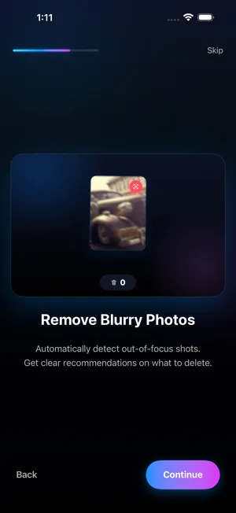

Comment trouver et supprimer les photos floues sur iPhone
Mis à jour en · Par Mohamed Elatabany
Les photos floues s’accumulent sans bruit : clichés bougés en basse lumière, mise au point ratée, photos prises en marchant. L’app Photos n’a pas de filtre de flou : soit vous les cherchez à l’œil, soit vous utilisez une app qui vérifie la netteté à votre place. Ce guide couvre les deux.
Pourquoi les photos d’iPhone sont floues
- Flou de bougé. En faible lumière, l’obturateur reste ouvert plus longtemps : le moindre tremblement ou un sujet en mouvement brouille l’image.
- Mise au point ratée. L’appareil photo a fait la mise au point sur l’arrière-plan plutôt que sur le sujet, ou vous étiez trop près.
- Objectif sale. Une trace de doigt rend tout doux et voilé.
- Photos accidentelles. Photos prises dans la poche, clichés déclenchés en baissant le téléphone.
La plupart ne valent jamais la peine d’être gardées, et elles sont souvent prises juste à côté d’une bonne version du même instant.
Méthode 1 : repérer les photos floues à la main dans Photos
Photos n’a ni album « flou » ni terme de recherche dédié, mais vous pouvez accélérer un passage manuel :
- Ouvrez Photos et affichez toutes les photos de la photothèque, puis écartez deux doigts pour agrandir les vignettes. Le flou est difficile à voir à la plus petite taille.
- Commencez là où le flou est probable : photos de nuit, soirées en intérieur, concerts, moments où vous étiez en mouvement.
- Ouvrez toute photo douteuse et zoomez sur les visages ou le texte. Si elle manque de netteté à 100 %, elle paraîtra floue une fois imprimée ou partagée.
- Touchez Sélectionner dans la grille, touchez les photos floues (ou faites glisser le doigt sur des rangées entières), puis touchez le bouton Corbeille et confirmez.
- Vérifiez aussi Types de média → Rafales. Les rafales contiennent souvent plusieurs images floues ; pour ne garder que la nette, touchez Sélectionner, cochez-la, touchez OK, puis choisissez de ne conserver que cette favorite.
Ça fonctionne, mais dans une grande photothèque, cela revient à examiner de près des milliers de photos.
Méthode 2 : laisser Photo Cleaner les signaler

La Détection de Flou de Photo Cleaner analyse vos photos sur l’appareil et signale celles qui sont probablement floues ou bougées. Rien n’est envoyé, et elle fonctionne hors connexion.
- Installez Photo Cleaner et touchez Autoriser l’accès complet pour lui donner accès à vos photos.
- Ouvrez Détection de Flou. L’app parcourt votre photothèque et rassemble les photos qui semblent floues.
- Balayez les résultats : à gauche pour supprimer, à droite pour conserver. Certaines photos sont floues volontairement, comme un sujet en mouvement ou un arrière-plan adouci : c’est vous qui décidez pour chacune.
- Vérifiez la Corbeille, puis videz-la. iOS vous demande de confirmer, et les photos passent 30 jours dans « Supprimées récemment ».
Ce qu’il vaut mieux garder, même flou
- La seule photo d’un moment. Une photo un peu floue d’un proche disparu vaut plus qu’une photo nette de rien du tout.
- Le flou voulu. Les traînées de lumière, les filés, les arrière-plans du mode Portrait et les Live Photos avec l’effet Pose longue sont faits pour avoir cet aspect.
- Les captures d’écran de documents dont vous avez encore besoin, même si elles sont un peu floues.
Dans le doute, balayez vers la droite. Vous pourrez toujours supprimer plus tard ; une fois « Supprimées récemment » vidé, impossible de revenir en arrière.
Moins de photos floues à l’avenir
- Essuyez l’objectif avant les photos importantes. Cela sauve plus de photos « molles » que n’importe quel réglage.
- Touchez l’écran pour faire la mise au point sur votre sujet ; maintenez le doigt pour verrouiller la mise au point et l’exposition (Verrouillage AE/AF).
- Restez immobile en mode Nuit jusqu’à la fin du minuteur, ou posez le téléphone sur un support.
- Prenez plusieurs images d’un sujet en mouvement, puis gardez la meilleure. L’outil Similaires / Doublons de Photo Cleaner marque la meilleure photo d’un groupe de photos quasi identiques : les images en trop sont faciles à éliminer ensuite.
Les photos floues se cachent souvent parmi les photos similaires
Quand un moment compte, on a tendance à le photographier plusieurs fois, et seules une ou deux images sont nettes. Plutôt que de juger chaque image isolément, regardez le groupe : l’outil Similaires / Doublons de Photo Cleaner empile les photos quasi identiques et marque la meilleure, pour que vous la gardiez et envoyiez les images bougées dans la Corbeille en une seule fois. Lancer Similaires d’abord et Détection de Flou ensuite laisse moins de photos à vérifier, car de nombreuses images floues ont déjà disparu quand vous y arrivez.
Récupérer l’espace
Les photos supprimées restent 30 jours dans Autres → Supprimées récemment et continuent d’occuper de l’espace. Ouvrez cet album (sous iOS 17 et versions ultérieures, il est verrouillé par Face ID, Touch ID ou votre code), puis touchez Sélectionner → Tout supprimer pour libérer l’espace immédiatement.
À lire aussi : supprimer les rafales sur iPhone, supprimer les photos en double et similaires, nettoyer rapidement votre pellicule, vider ou récupérer « Supprimées récemment ».
Essayez la méthode rapide
Photo Cleaner se télécharge gratuitement, avec 100 suppressions gratuites, une seule fois.